Nupic Web Application development
Contents
Why to build a Web Application?
Focus in
This tutorial is focused mainly on building web application based on Nupic, not on Nupic as platform. Consider it as one more tool for learning Nupic and data visualization in most (probably) convenient way. It will not be useful for those who has great experience on web-development in Python, but can help very much for others who wants try Nupic in such a way.
Why to build a Web Application?
There are two main reasons — flexibility and imagery.
You may build/rebuild your application almost without any limitations; the Nupic codebase is encapsulated from it. And you have total control on output data appearance using all richness of HTML/JavaScript/CSS etc.
The common data flow schema
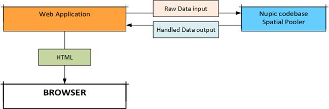
The detailed diagram of the process is givenfurther.
Tools
This tutorial is suited for:
· OS — Windows 7 or Linux (Ubunut 13.04) with Nupic being preinstalled.
· Platform — Python 2.7x
· IDE — Pycharm Community Edition (optional — you can use any other).
· Web framework — Django 1.6x.
If you wonder — why Django? — the reason is that this framework takes care (and makes you free of) about lots technical things, in particular — setting/using webserver. It just works after installation and you don’t need to spend your time to customize it. Actually if you are more familiar with some other python-based web-framework — no problem, it is up to you.
Preparations
First of all you have Python to be installed on your system.
Download/Install Django
https://www.djangoproject.com/download/
https://docs.djangoproject.com/en/1.6/intro/install/
Note for linux users:
Probably the simplest way is:
sudo pip install django
Check if Django is installed
>>>python
>>>import django
>>>print(django.get_version())
[version of django]
If you get the Django version here, then everything OK; go to the next step — project creating.
Create a Project
1. Create the directory for your project.
2. For Windows users:
Copy the django-admin.py file from the directory where Django
had been installed
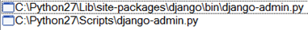
Note: both files are the same.
…to the your project’s directory. Let’s name it “webApp”
3. Create the Django project
a. Go to the directory where your project should be located:
>cd path_to_project/webApp
b. Make a project:
>python django-admin.py startproject webApp
The official tutorial is here:
https://docs.djangoproject.com/en/1.6/intro/tutorial01/#creating-a-project
Customize IDE
Check Python version for the project:
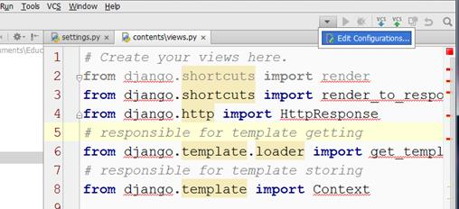

Note for VM users:
Point out the virtualenv at the nupic location:
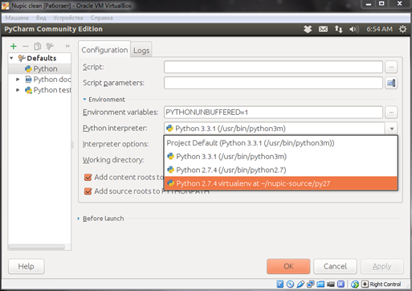
Add the Django installation directory to the project content root:
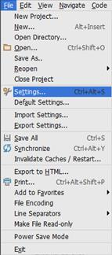
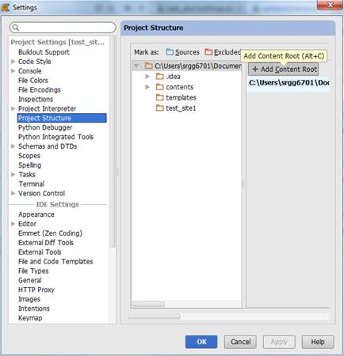
Windows:
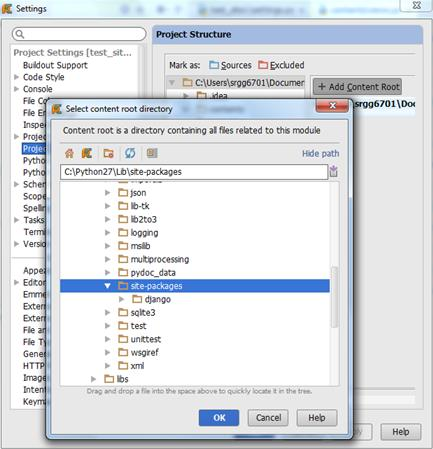
Linux:
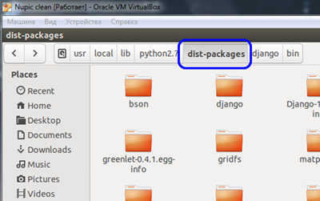
After that your IDE has to see all imports:
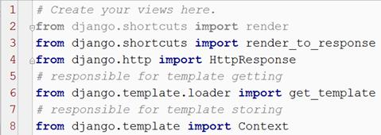
If it doesn’t, make sure that all your paths are marked as “sources”.
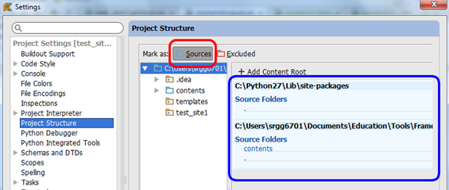
Run webserver
Now go to the project directory (in this location should be the file which is named manage.py) and make a command:
>python manage.py runserver
You have to see the message in your console/terminal:
Starting development server at http://127.0.0.1:8000/
Quit the server with CTRL-BREAK.
Try to run a browser and go to this address. You have to see something like this:
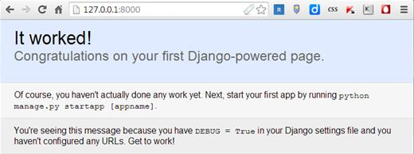
Homepage
As you got the site prototype you may clone its content from a remote repository (of course you can also continue to build it by yourself). In this case your main page will look like this:
There are two links now. The second one is for testing.
Test page
If you click it you should see something like this:
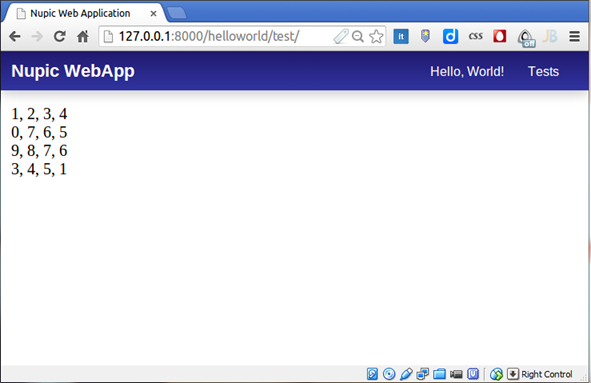
Its content comes from the helloworld/test.py file.
webApp structure investigation
OK, it is the time to focus on the project’s structure.
If you’ve got the site from a remote repository you have to see something like this:
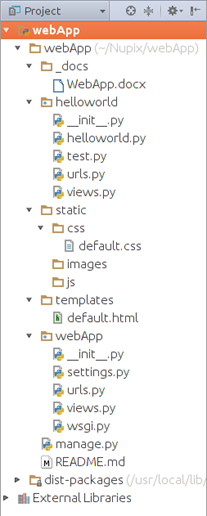
Let’s investigate our web application’s folders and files!
Note that Python (and Django) let you design it as you prefer, so such a structure may be changed if you want.
Application workflow schema
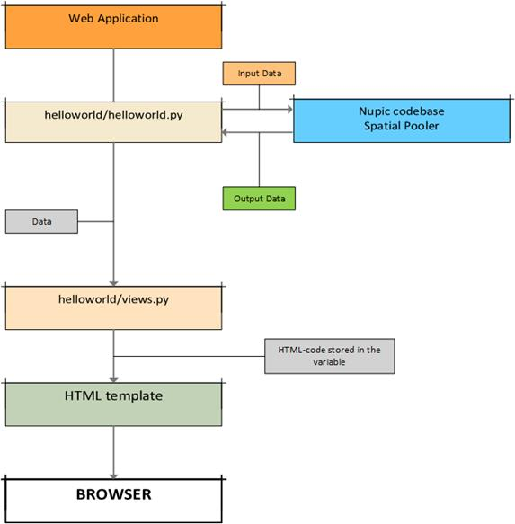
As mentioned earlier, the Nupic codebase is encapsulated from Web application. It gets inputs and returns handled data. First of all we have to consider the folder which contains the application settings.
webApp
We have two such directories. One is our project’s root directory while another one is the “application” directory (the details about this term are bellow).

The file wsgi.py will not be considered here because it is applied only with Django itself. You can find the full information about it in the official site. But files settings.py, urls.py and views.py are interesting for us.
settings.py
As its name suggests it is the place where the application settings live. Some of them are set while creating project (i.e. it happens automatically), other must be set manually. In our case the latter ones are:
The HTML-templates directory
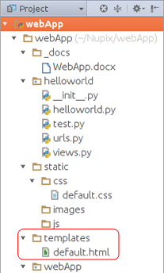
It sets here:
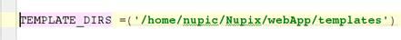
So-called “installed applications”
You may consider them here just as directories, which should be accessible for the application:
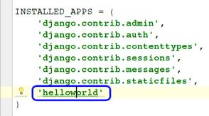
Our one has the single such directory named helloworld.
Note that in the reality this is the more sophisticated concept. If you are interested of it, look the additional information here: https://docs.djangoproject.com/en/1.6/intro/tutorial01/#creating-models (see the section “Projects vs. apps”). But for our current purposes the information mentioned above is enough.
“static” directory
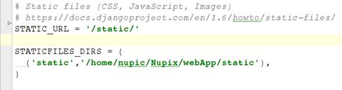
More detailed about such a kind of static folder/files is here.
urls.py
This is the main (default) application router. It uses URLs patterns to do following 2 things:
1. Assign the function which should form the HTML-content which must be injected into the template.
2. Tells the browser a location which it must go to.

You can see here two routs:
The route #1
The string in the row #4 means:
If the location contains only a [domain_name] (may be with “/” in the end; in our case it is http://127.0.0.1:8000/) it should call the function home() which is placed in the file webApp/views.py:
This function assign the HTML-content for the variable “content” which is used within HTML-template:
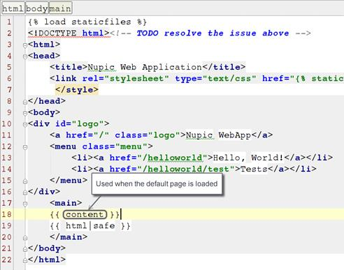
As a result the string “Home page” appears.
The route #2
The string in the row #5 means:
If the location is [domain_name]/helloworld (it also may terminated by “/”) the file helloworld/urls.py must be included.
Pay attention that every “application” (mentioned earlier) within a project should contain such a file. You may think about it as a second-level router, which handles URLs within its own application scope. More information follows further.
views.py
Its purpose has been describedabove.
Notice, that as in the case with urls.py such files should be placed within every application in a project.
helloworld folder
In fact this is the most important place in our simplest application. It contains the file helloworld.py which, in turn, contains the script connected to the Nupic base application.
helloworld.py
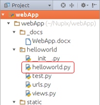
This script in essence is the example of another simple application (built just on Python) which name speaks for itself — nupichelloworld. You can get it here: https://github.com/lonesword/nupichelloworld. The only difference between its file helloworld.py and the file helloworld/helloworld.py in webApp is that the native one outputs resulting code in the console while the second one transmits it to the function helloworld() in the helloworld/views.py.
The code difference is:
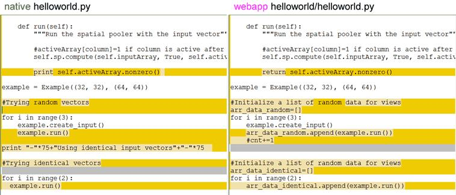
views.py
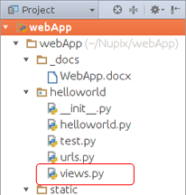
So the previously described file (which can be considered as Model in the MVC terminology) returns the data stored in the two arrays: arr_data_random and arr_data_identical. They are handled here by the helloworld() function:
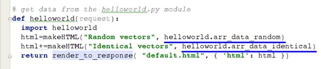
…which passes them to the next function — makeHTML() that does all the job and returns the HTML:
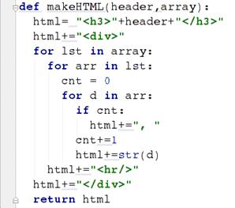
So what you will see is what the Nupic codebase returns. In our simplest case it looks something like this:

You can consider it as a starting point for own investigations and improvement of this web application.
Also there is another function — test().
It just handles data coming from testing file considered next.
test.py
As being said earlier it is created purely for testing purposes.
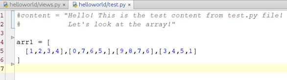
This is used by function test() in the helloworld/views.py file. This function just returns some content and injects it into the HTML-template.
urls.py
This file is for routing within the additional (inner) application in the project.
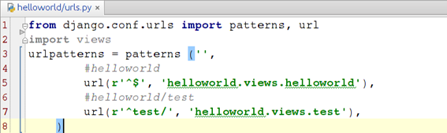
It is used by Django after the default router is being handled.
The code in the string #5 means:
If page location is [domain_name]/[application_name] (in our case it is http://127.0.0.1:8000/helloworld) call the function helloworld() in the file helloworld/views.py (considered earlier as well).
The code in the string #7 means:
If page location is [domain_name]/[application_name]/test then call the function test() in the file helloworld/views.py (considered earlier as well).
templates
We have here the single file:
But you can add own templates if it is necessary.
default.html
So Django injects content returning by the helloworld() function (and the test() function is used for that also) into HTML-template:
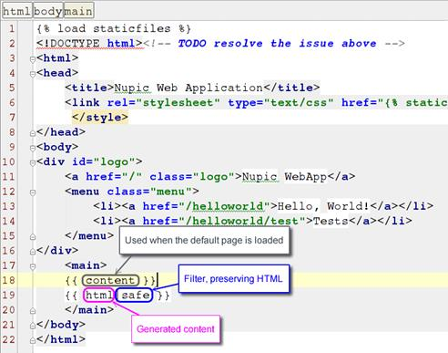
static
This is a special folder to hold such files like css, images, javascripts etc, which are considered as “static”, i.e. not being handled by Python itself:
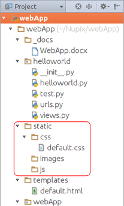
Now there is only one file which contains CSS-styles for our application. To include it into template the following directive is used:
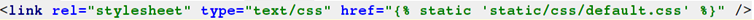
As you can see there is a Django directive:
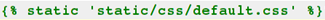
which tells Python to include this file into HTML.
Two another folders are reserved for further development.
That’s all. Happy coding!